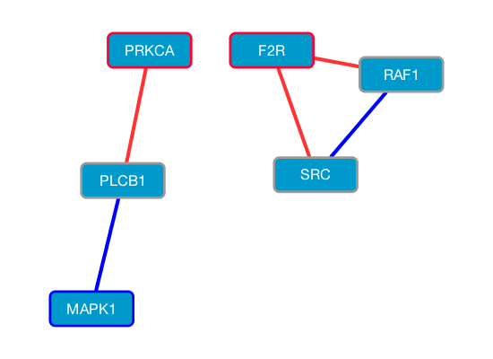

This page provides an updated Java implementation of an algorithm EDDY. The original version, which was presented in "EDDY: A novel statistical gene set test method to detect differential genetic dependencies", can be found here.
Identifying differential features between conditions is a popular approach to understanding molecular features and their mechanisms underlying a biological process of particular interest. Although many tests for identifying differential expression of gene or gene sets have been proposed, there was limited success in developing methods for differential interactions of genes between conditions because of its computational complexity. We present a method for Evaluation of Dependency DifferentialitY (EDDY), which is a statistical test for differential dependencies of a set of genes between two conditions. Unlike previous methods focused on differential expression of individual genes or correlation changes of individual gene-gene interactions, EDDY compares two conditions by evaluating the probability distributions of dependency networks from genes. The method has been evaluated and compared with other methods through simulation studies, and application to glioblastoma multiforme data resulted in informative cancer and glioblastoma multiforme subtype-related findings. The comparison with Gene Set Enrichment Analysis, a differential expression-based method, revealed that EDDY identifies the gene sets that are complementary to those identified by Gene Set Enrichment Analysis. EDDY also showed much lower false positives than Gene Set Co-expression Analysis, a method based on correlation changes of individual gene-gene interactions, thus providing more informative results. The Java implementation of the algorithm is freely available to noncommercial users.
eddy_mt-v2_5_2.jar is a runnable JAR file that can be used to run a single instance of EDDY from the command line. This can now be run over multiple gene sets.
Programs were implemented and tested on Java version 1.6.0. Requires Java virtual machine 1.6.0 or higher. EDDY is a multi-threaded application and has been tested up to 32 cores.
The input data file is a tab-delimited text file. Each row is a variable and each column is a sample. It needs both of row and column headers for variable names and sample names. Variable values should be categorial. The following file is a sample input data file:
The sample class information file is a tab-delimited single line text file. Two-class information needs to be listed in the order of samples from the input data file. The following file is an example of a sample class information file:
The gene set file is a tab-delimited mutiple line text file where each line provides the name of the gene set, source URL and gene names (or variable names for general applications). The following file is a sample combined gene set file:
For command line options, execute the following command:
% java -jar eddy_mt-v2_5_2.jar
You may use the following options with the command:
-d |
input data file |
-g |
gene set list file |
-c |
class information file |
-edf |
edge-direction fixed boolean parameter |
-m |
minimum gene set size for analysis. Default = -1 for no limit. |
-M |
maximum gene set size for analysis. Default = -1 for no limit. |
-mp |
maximum number of parents for each node |
-mt |
number of threads to use |
-p |
pvalue threshold for independence testing. [default = 0.05] |
-qp |
Quick permutations enabled -- permutation stopswhen there is no possibility to yield p-value less than given threshold. |
-s |
number network structures to consider [default = LOO (-1)] |
-r |
number of permutations for statistical significance testing. [default = 1000] |
The following is an example command:
% java -jar eddy_mt-v2_5_2.jar -d TCGA_GBM_mRNA_discrete_HGNC.txt -g c2.cp.v4.0.symbols.gmt.txt -c Proneural.txt -m 5 -M 50 -r 1000
In case of low memory error (java.lang.OutOfMemoryError Exception, from Java heap space), use -Xmx option for Java virtual machine to increase the amount of memory. For example:
% java -Xmx8196m -jar eddy_mt-v2_5_2.jareddy_mt-v2_5_2.jar).)
Based on the specified size limits (-m and -M options), EDDY constructs a list of gene sets and sorts it from largest to smallest. An EDDY process is generated for each gene set and distributed to the next available thread in round robin fashion.
For gene sets that meet the p-value criterion, EDDY generates four files:
Network.txt file specifying all the network configurations that were analyzedsummary.txt file, listing the probabilities of these networksEdgelist.txt file for this same composite networkFor display purposes, an additional Nodes.txt file can be generated, which gives the ratio of interaction types on incoming edges for each node. A python script to create this is provided here. It is invoked as:
% python edge_count.py PATHWAYNAME_Edgelist.txtTo display a network configuration for a specific geneset using Cytoscape 3.2.
Edgelist.txt for the specific geneset. Choose the interaction from column 3 and source/destination columns 1 & 2. To avoid skipping the first line, it will work if you check the "Show text file import options" box and then uncheck "Space". The top line of the file will now appear in the edge list.This should create a network image like pictured below.
The development of the software EDDY was partly funded by National Cancer Institute, National Institutes of Health (NIH) [29XS195 — In-Silico Research Center of Excellence (ISRCE), 1U01CA168397-01 — Center for Target Discovery and Development (CTD2) / Targeted Treatment for Tumors (T3)].